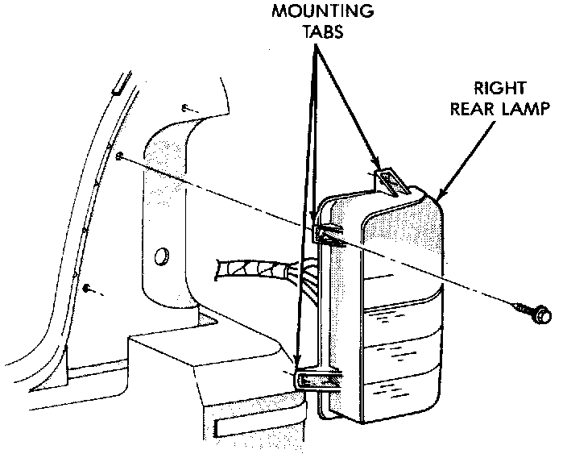

Tail, Stop, Turn Signal, Sidemarker and Back-Up Lamp
The stop, turn signal, back-up and rear side marker lamps are incorporated into the tail lamp.REMOVAL
Tail Lamp:

1. Remove screws attaching lamp to body.
2. Remove bulb sockets from lamp.
3. Separate lamp from vehicle.
INSTALLATION
1. Position lamp at vehicle and install bulb sockets.
2. Position lamp on vehicle and install screws.